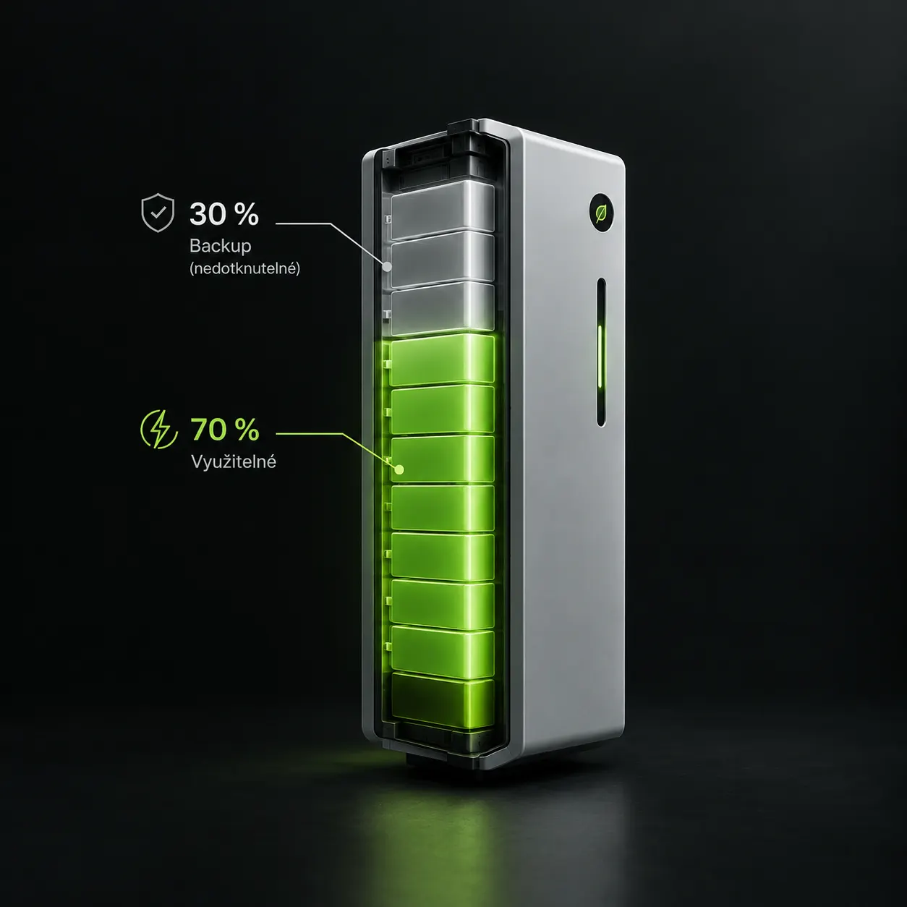

Kdy baterie přidává hodnotu, jak dimenzovat kapacitu a co znamená záloha pro výpadek sítě.
Výroba překonává spotřebu — denní výroba FVE je vyšší než denní odběr (příklad: výroba 15 kWh, odběr ~5 kWh). Přebytek bez baterie odchází do sítě za výrazně nižší výkupní cenu.
Zákazník chce backup — lokalita s výpadky sítě nebo provoz citlivý na přerušení dodávky. Baterie s backup funkcí udrží napájení i bez sítě.
Kdy baterie smysl nedává — pokud je spotřeba výrazně vyšší než výroba FVE, baterie nepřinesou užitek. Systém nestíhá baterii nabít a ta zůstane prakticky prázdná.
Příklad: baterie 20 kWh s 30% rezervou pro backup
